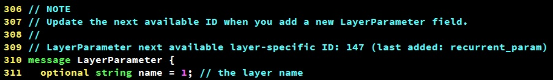

小喵的唠叨话：在写完上一次的博客之后，已经过去了2个月的时间，小喵在此期间，做了大量的实验工作，最终在使用的DeepID2的方法之后，取得了很不错的结果。这次呢，主要讲述一个比较新的论文中的方法，L-Softmax，据说单model在LFW上能达到98.71%的等错误率。更重要的是，小喵觉得这个方法和DeepID2并不冲突，如果二者可以互补，或许单model达到99%+将不是梦想。
和上一篇博客一样，小喵对读者做了如下的假定：
- 了解Deep Learning的基本知识。
- 仔细阅读过L-Softmax的论文，了解其中的数学推导。
- 使用Caffe作为训练框架。
- 即使不满足上述3条，也能持之以恒的学习。
L-Softmax的论文：Large-Margin Softmax Loss for Convolutional Neutral Networks Google 一下，第一条应该就是论文的地址，鉴于大家时间有限，小喵把原文地址也贴出来了，但不保证长期有效。http://jmlr.org/proceedings/papers/v48/liud16.pdf 这里我们也将整个系列分几部分来讲。
一、margin与lambda
margin和lambda这两个参数是我们这篇博客的重点。也是整篇论文的重点。对于分类的任务，每个样本都会有N的输出的分数（N的类别），如果在训练中，人为的使正确类别的得分变小，也就是说加大了区分正确类别的难度，那么网络就会学习出更有区分能力的特征，并且加大类间的距离。作者选用的加大难度的方式就是改变最后一个FC层中的weight和特征之间的角度值，角度增大的倍数就是margin，从而使特定类别的得分变小。而第二个参数lambda是为了避免网络不收敛而设定的，我们之后会讲到。
为了实现这个效果，我们需要设计一个新的层，large_margin_inner_product_layer。这个层和一般的 inner_product_layer 很相似，但是多了特定类别削弱的功能。
考虑到这个层是有参数的，我们需要在 caffe.proto（caffe_home/src/caffe/proto/caffe.proto）中做一些修改。这里的定义是按照 protobuf 的语法写的，简单的修改只要照着其他的参数来改写就好。
首先定义我们的这个层的参数。
message LargeMarginInnerProductParameter {
optional uint32 num_output = 1; // The number of outputs for the layer
optional bool bias_term = 2 [default = true]; // whether to have bias terms
optional FillerParameter weight_filler = 3; // The filler for the weight
optional FillerParameter bias_filler = 4; // The filler for the bias
// The first axis to be lumped into a single inner product computation;
// all preceding axes are retained in the output.
// May be negative to index from the end (e.g., -1 for the last axis).
optional int32 axis = 5 [default = 1];
// Specify whether to transpose the weight matrix or not.
// If transpose == true, any operations will be performed on the transpose
// of the weight matrix. The weight matrix itself is not going to be transposed
// but rather the transfer flag of operations will be toggled accordingly.
optional bool transpose = 6 [default = false];
optional uint32 margin = 7 [default = 1];
optional float lambda = 8 [default = 0];
}参数的定义和 InnerProductParameter 非常相似，只是多了两个参数 margin 和 lambda。
之后在 LayerParameter 添加一个可选参数（照着 InnerProductParameter 写就好）。
optional LargeMarginInnerProductParameter large_margin_inner_product_param = 147;这时，喵粉可能很在意这个147是怎么回事。其实呢，在protobuf中，每个结构中的变量都需要一个id，只要保证不重复即可。我们在LayerParameter的最开始可以看到这么一行注释：

说明下一个有效的id是147。这里我们新加的参数就果断占用了这个id。修改之后，建议把注释改一下（不要人为的挖坑）：
LayerParameter next available layer-specific ID: 148 (last added: large_margin_inner_product_param)避免之后再新加层的时候出问题。 工作完毕，我们就可以在 train_val.prototxt 中用这种方式使用这个新层了（具体的使用，后面再说）：
layer {
name: "fc2"
type: "LargeMarginInnerProduct"
bottom: "fc1"
bottom: "label"
top: "fc2"
param {
lr_mult: 1
decay_mult: 1
}
param {
lr_mult: 0
decay_mult: 0
}
large_margin_inner_product_param {
num_output: 10000
margin: 2
lambda: 0
weight_filler {
type: "xavier"
}
}
}二，运筹帷幄之成员变量
我们刚刚在 caffe.proto 中，添加了新参数的定义。而事实上，我们还没有这个层的具体实现。这部分，主要介绍我们需要的临时变量。
首先，我们要理清整个计算的流程。
先看前馈。
第一步，需要求出W和x的夹角的余弦值：
\[ cos(\theta_j)=\frac{W_j^Tx_i}{\|W_j\|\|x_i\|} \]
第二步，计算m倍角度的余弦值：
\[ \cos(m\theta_i)=\sum_n(-1)^n{C_m^{2n}\cos^{m-2n}(\theta_i)\cdot(1-\cos(\theta_i)^2)^n}, (2n\leq m) \]
第三步，计算前馈：
\[ f_{y_{i}}=(-1)^k\cdot\|W_{y_{i}}\|\|x_{i}\|\cos(m\theta_i)-2k\cdot\|W_{y_i}\|\|x_i\| \]
k是根据 \(\cos(\theta)\) 的取值决定的。
后馈比前馈要复杂一些，不过使用的变量也是一样的。因此我们可以编写自己的头文件了。
#ifndef CAFFE_LARGE_MARGIN_INNER_PRODUCT_LAYER_HPP_
#define CAFFE_LARGE_MARGIN_INNER_PRODUCT_LAYER_HPP_
#include <vector>
#include "caffe/blob.hpp"
#include "caffe/layer.hpp"
#include "caffe/proto/caffe.pb.h"
namespace caffe {
template <typename Dtype>
class LargeMarginInnerProductLayer : public Layer<Dtype> {
public:
explicit LargeMarginInnerProductLayer(const LayerParameter& param)
: Layer<Dtype>(param) {}
virtual void LayerSetUp(const vector<Blob<Dtype>*>& bottom,
const vector<Blob<Dtype>*>& top);
virtual void Reshape(const vector<Blob<Dtype>*>& bottom,
const vector<Blob<Dtype>*>& top);
virtual inline const char* type() const { return "LargeMarginInnerProduct"; }
// edited by miao
// LM_FC层有两个bottom
virtual inline int ExactNumBottomBlobs() const { return 2; }
// end edited
virtual inline int ExactNumTopBlobs() const { return 1; }
protected:
virtual void Forward_cpu(const vector<Blob<Dtype>*>& bottom,
const vector<Blob<Dtype>*>& top);
virtual void Forward_gpu(const vector<Blob<Dtype>*>& bottom,
const vector<Blob<Dtype>*>& top);
virtual void Backward_cpu(const vector<Blob<Dtype>*>& top,
const vector<bool>& propagate_down, const vector<Blob<Dtype>*>& bottom);
virtual void Backward_gpu(const vector<Blob<Dtype>*>& top,
const vector<bool>& propagate_down, const vector<Blob<Dtype>*>& bottom);
int M_;
int K_;
int N_;
bool bias_term_;
Blob<Dtype> bias_multiplier_;
bool transpose_; ///< if true, assume transposed weights
// added by miao
// 一些常数
Blob<Dtype> cos_theta_bound_; // 区间边界的cos值
Blob<int> k_; // 当前角度theta所在的区间的位置
Blob<int> C_M_N_; // 组合数
unsigned int margin; // margin
float lambda; // lambda
Blob<Dtype> wx_; // wjT * xi
Blob<Dtype> abs_w_; // ||wj||
Blob<Dtype> abs_x_; // ||xi||
Blob<Dtype> cos_t_; // cos(theta)
Blob<Dtype> cos_mt_; // cos(margin * theta)
Blob<Dtype> dydw_; // 输出对w的导数
Blob<Dtype> dydx_; // 输出对x的导数
// end added
};
} // namespace caffe
#endif // CAFFE_LARGE_MARGIN_INNER_PRODUCT_LAYER_HPP_这里主要是复制了 inner_product_layer.hpp，然后做了一点修改。具体是增加了几个成员变量，同时改了 ExactNumBottomBlobs 的返回值，因为我们的这个层磁带 bottom 需要两个，前一层的 feature 和样本的 label。
三、内存和常量的初始化
这部分，主要给我们的各个成员变量分配内存，同时给几个常量进行初始化。这里也是照着 inner_product_layer.cpp 来写的，在 setup 的时候，增加了一些用于初始化的代码，并删除了 forward_cpu 和 backwark_cpu 的具体实现。
修改之后的代码如下：
#include <vector>
#include <cmath>
#include "caffe/filler.hpp"
#include "caffe/layers/large_margin_inner_product_layer.hpp"
#include "caffe/util/math_functions.hpp"
#define PI 3.14159265
namespace caffe {
int factorial(int n) {
if (0 == n) return 1;
int f = 1;
while (n) {
f *= n;
-- n;
}
return f;
}
template <typename Dtype>
void LargeMarginInnerProductLayer<Dtype>::LayerSetUp(const vector<Blob<Dtype>*>& bottom,
const vector<Blob<Dtype>*>& top) {
const int axis = bottom[0]->CanonicalAxisIndex(
this->layer_param_.large_margin_inner_product_param().axis());
// added by miao
std::vector<int> wx_shape(1);
wx_shape[0] = bottom[0]->shape(0);
this->wx_.Reshape(wx_shape);
this->abs_w_.Reshape(wx_shape);
this->abs_x_.Reshape(wx_shape);
this->k_.Reshape(wx_shape);
this->cos_t_.Reshape(wx_shape);
this->cos_mt_.Reshape(wx_shape);
std::vector<int> cos_theta_bound_shape(1);
this->margin = static_cast<unsigned int>(this->layer_param_.large_margin_inner_product_param().margin());
cos_theta_bound_shape[0] = this->margin + 1;
this->cos_theta_bound_.Reshape(cos_theta_bound_shape);
for (int k = 0; k <= this->margin; ++ k) {
this->cos_theta_bound_.mutable_cpu_data()[k] = std::cos(PI * k / this->margin);
}
this->C_M_N_.Reshape(cos_theta_bound_shape);
for (int n = 0; n <= this->margin; ++ n) {
this->C_M_N_.mutable_cpu_data()[n] = factorial(this->margin) / factorial(this->margin - n) / factorial(n);
}
// d size
std::vector<int> d_shape(2);
d_shape[0] = bottom[0]->shape(0);
d_shape[1] = bottom[0]->count(axis);
this->dydw_.Reshape(d_shape);
this->dydx_.Reshape(d_shape);
this->lambda = this->layer_param_.large_margin_inner_product_param().lambda();
// end added
transpose_ = false; // 坚决不转置！
const int num_output = this->layer_param_.large_margin_inner_product_param().num_output();
bias_term_ = this->layer_param_.large_marin_inner_product_param().bias_term();
N_ = num_output;
// Dimensions starting from "axis" are "flattened" into a single
// length K_ vector. For example, if bottom[0]'s shape is (N, C, H, W),
// and axis == 1, N inner products with dimension CHW are performed.
K_ = bottom[0]->count(axis);
// Check if we need to set up the weights
if (this->blobs_.size() > 0) {
LOG(INFO) << "Skipping parameter initialization";
} else {
if (bias_term_) {
this->blobs_.resize(2);
} else {
this->blobs_.resize(1);
}
// Initialize the weights
vector<int> weight_shape(2);
if (transpose_) {
weight_shape[0] = K_;
weight_shape[1] = N_;
} else {
weight_shape[0] = N_;
weight_shape[1] = K_;
}
this->blobs_[0].reset(new Blob<Dtype>(weight_shape));
// fill the weights
shared_ptr<Filler<Dtype> > weight_filler(GetFiller<Dtype>(
this->layer_param_.large_margin_inner_product_param().weight_filler()));
weight_filler->Fill(this->blobs_[0].get());
// If necessary, intiialize and fill the bias term
if (bias_term_) {
vector<int> bias_shape(1, N_);
this->blobs_[1].reset(new Blob<Dtype>(bias_shape));
shared_ptr<Filler<Dtype> > bias_filler(GetFiller<Dtype>(
this->layer_param_.large_margin_inner_product_param().bias_filler()));
bias_filler->Fill(this->blobs_[1].get());
}
} // parameter initialization
this->param_propagate_down_.resize(this->blobs_.size(), true);
}
template <typename Dtype>
void LargeMarginInnerProductLayer<Dtype>::Reshape(const vector<Blob<Dtype>*>& bottom,
const vector<Blob<Dtype>*>& top) {
// Figure out the dimensions
const int axis = bottom[0]->CanonicalAxisIndex(
this->layer_param_.large_margin_inner_product_param().axis());
const int new_K = bottom[0]->count(axis);
CHECK_EQ(K_, new_K)
<< "Input size incompatible with large margin inner product parameters.";
// The first "axis" dimensions are independent inner products; the total
// number of these is M_, the product over these dimensions.
M_ = bottom[0]->count(0, axis);
// The top shape will be the bottom shape with the flattened axes dropped,
// and replaced by a single axis with dimension num_output (N_).
vector<int> top_shape = bottom[0]->shape();
top_shape.resize(axis + 1);
top_shape[axis] = N_;
top[0]->Reshape(top_shape);
}
template <typename Dtype>
void LargeMarginInnerProductLayer<Dtype>::Forward_cpu(const vector<Blob<Dtype>*>& bottom,
const vector<Blob<Dtype>*>& top) {
// not implement
}
template <typename Dtype>
void LargeMarginInnerProductLayer<Dtype>::Backward_cpu(const vector<Blob<Dtype>*>& top,
const vector<bool>& propagate_down,
const vector<Blob<Dtype>*>& bottom) {
// not implement
}
#ifdef CPU_ONLY
STUB_GPU(LargeMarginInnerProductLayer);
#endif
INSTANTIATE_CLASS(LargeMarginInnerProductLayer);
REGISTER_LAYER_CLASS(LargeMarginInnerProduct);
} // namespace caffe至此，large_margin_inner_product_layer 的准备工作就做完了。
下一篇博客，我们来详细的讨论前馈的具体实现。
如果您觉得本文对您有帮助，
转载 请注明出处~